Edinburgh
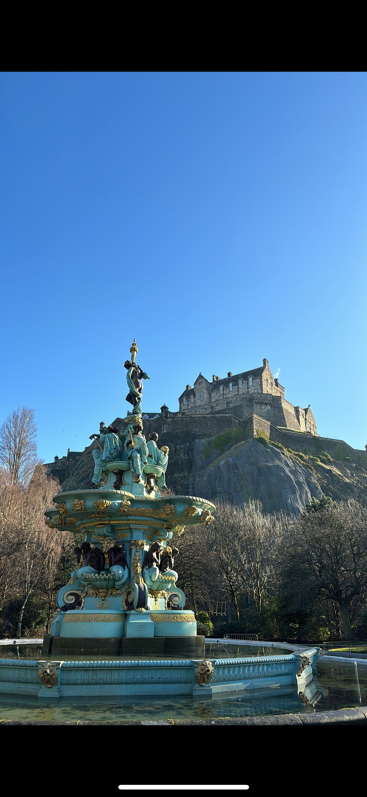
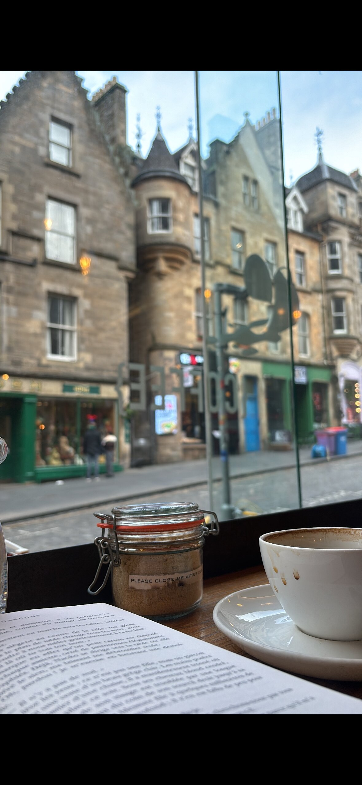
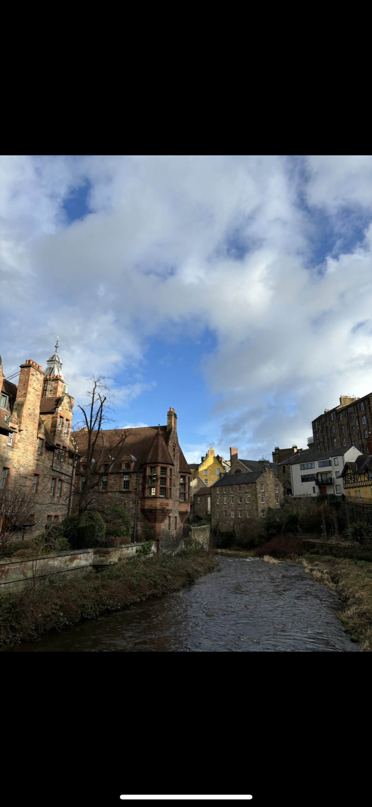
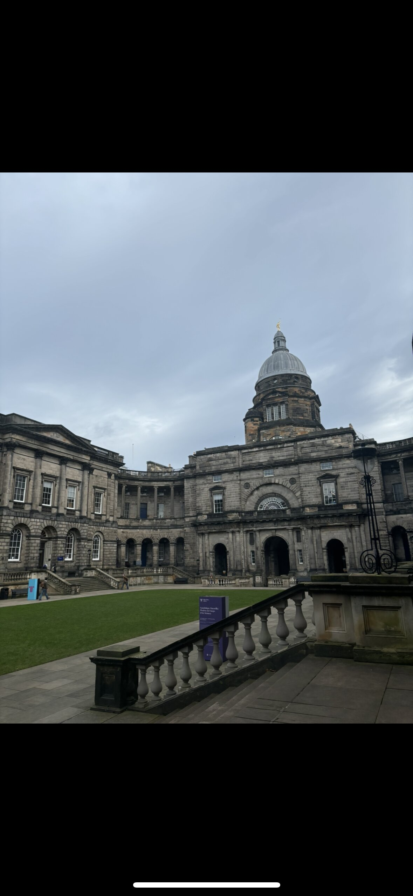
The city of Edinburgh for my first travel destination felt like a
natural choice to me. On the one hand, I wanted to go to an
English-speaking country to be able to practice my oral skills in an
everyday setting after having studied this language for five years.
On the other hand, I absolutely wanted this first trip to be a solo
one in order to mark the start of my independence after graduating.
After some research, I was able to read quite a number of postive
experiences from women travelers who had been there on their own,
which reinforced my original decision.
But in reality, what was drawing me to this city the most was the
cozy feeling it seemed to convey, like that of a warm fireplace
after a cold day. And it is safe to say that I was not disappointed.
What Stayed With Me
-
In front of the castle, you can find a plaque paying tribute to
the women who were wrongly accused of witchcraft and executed
near this spot.
-
This city is for dark academia lovers. Seeing the universities
and libraries made me regret the fact that I would never be able
to be an Edinburgh student, learning and sitting somewhere,
sipping coffee, sheltered from the rain.
-
Dean Village is a five-minutes walk from the city center. It is
a magical historical place that takes you away from the fact
that you are in the capital of Scotland and keeps you in a
fairytale setting for a few hours. It is definitely worth a
visit!
Budapest
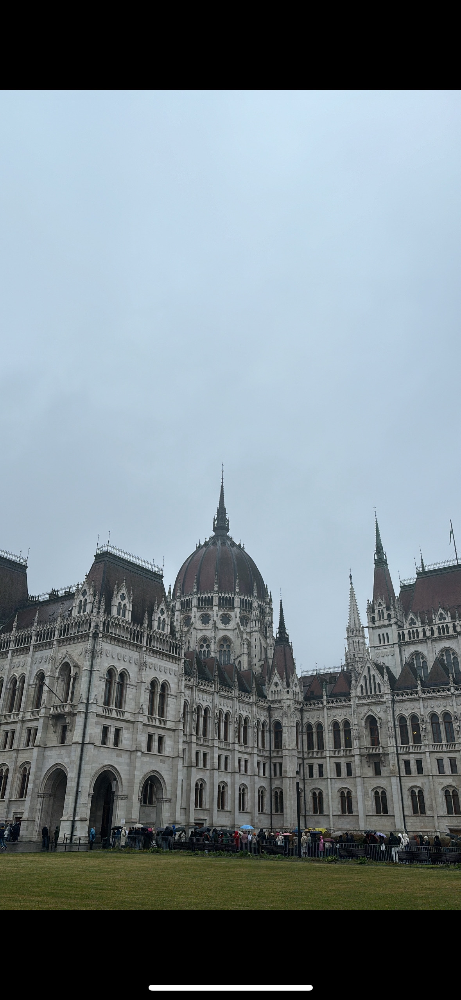
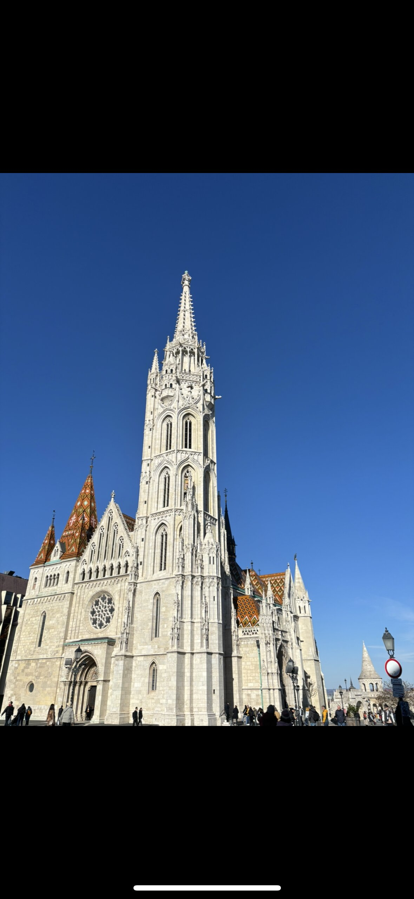
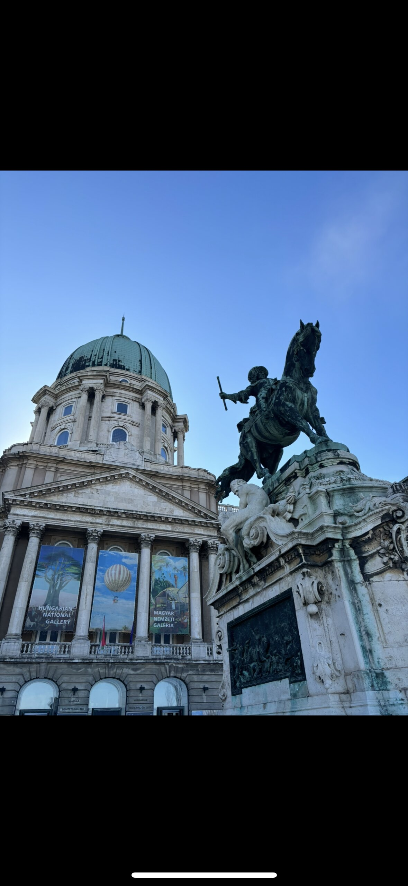
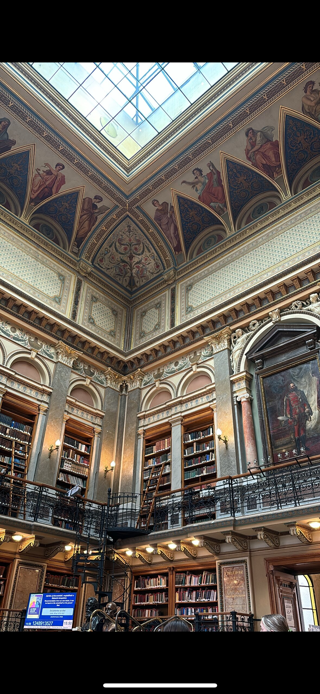
Budapest was my second solo trip. Indeed, my first one was such a
good, enriching experience that I wanted to repeat it pretty
quickly. I was not really familiar with Hungary and had only seen
beautiful pictures of its capital, whose aesthetic seemed far from
what I had been used to seeing so far. It got me curious and eager
to be able to step out of my comfort zone a bit more.
I was not expecting to fall in love with this city so quickly: the
impressive architecture, the history embedded in its walls and the
langos (a Hungarian deep-fried flatbread, mine was topped with sour
cream, garlic, and cheese)!
What Stayed With Me
-
The first monument I visited was the parliament which was open
for the national day and I immediately understood why it was so
renowned: it took my breath away.
-
The city is located on both sides of the Danube. I went on a
night cruise on the river and being able to experience the city
this way, to take it all in a calm atmosphere with its buildings
illuminated was mind-blowing.
-
If the Buda castle is definitely worth seeing, another caught my
attention: the Vajdahunyad Castle located in the city park,
which showcases the architectural evolution in Hungary. However,
what struck me there was the unexpected feeling that I was
standing in front of Dracula’s castle!
Fez
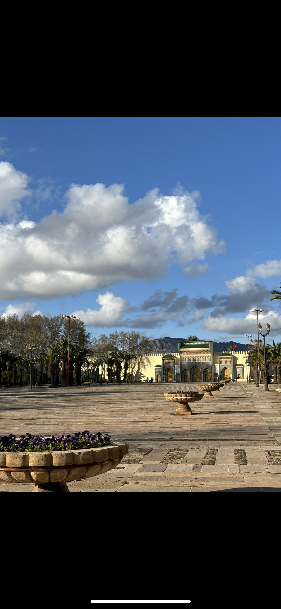
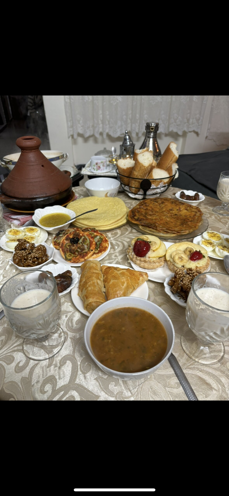
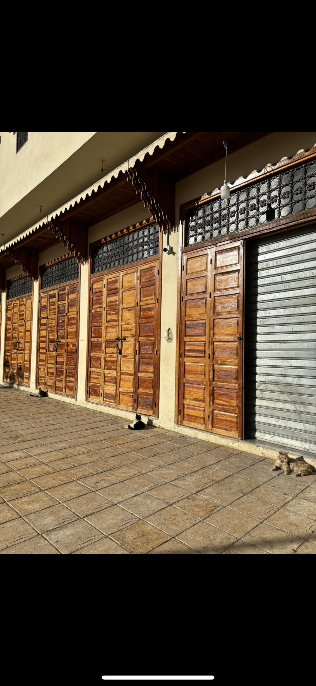
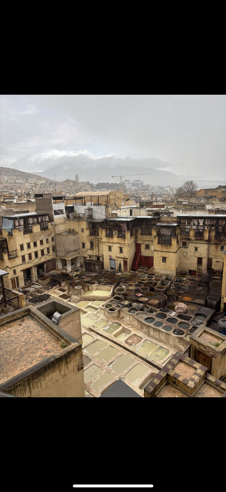
Morocco had always been on the list of countries I wanted to visit,
however I originally had not planned for this trip to happen so
soon. I was invited by one of my friends who was planning on
spending the last week of Ramadan with her family living in Fez. I
gladly accepted. This trip was my first one outside Europe.
The city of Fez is considered the cultural capital of the country,
something I came to understand within my first few days there. I
quickly settled into the rhythm of the city and enjoyed the
beautiful, colorful and rich environment.
What Stayed With Me
-
The food in Morocco is amongst the best I have ever eaten. Each
night, after breaking the fast, we would share so many delicious
dishes. Afterwards, we would meet other people our age in cafés
for tea, coffee, sweet treats and to dance.
-
The souks in Fez are a cultural and historical marvel: an
opportunity to admire traditional and local crafts, get food,
immerse yourself completely in the energy of the city.
-
I fell in love with so many cats. They are everywhere and
friendly. I remember this particular moment in front of the
Royal Palace: three of them lying there and enjoying the sun
right before its walls. What a sight!
New York
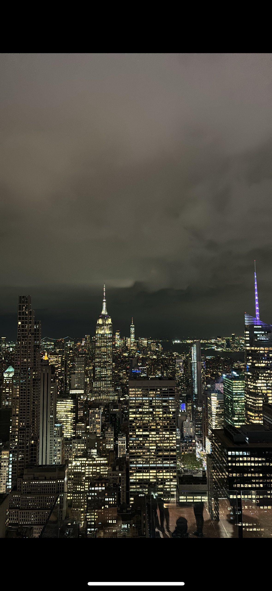
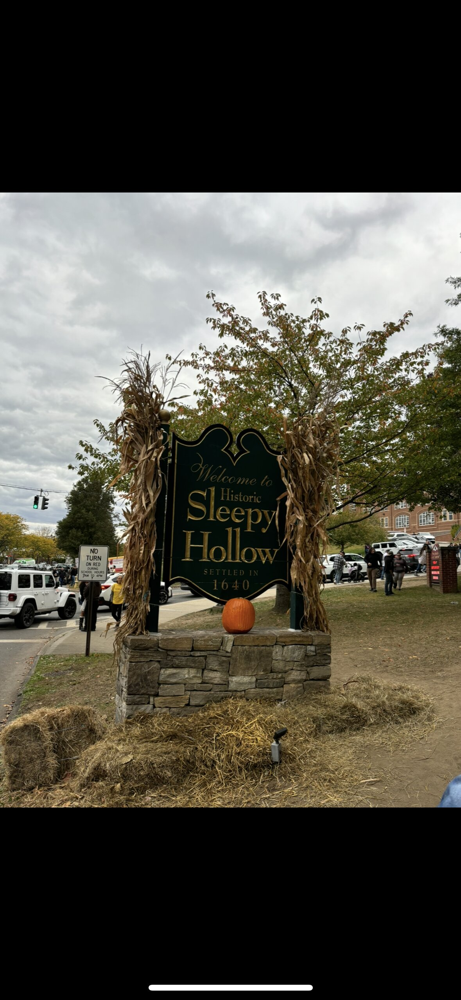
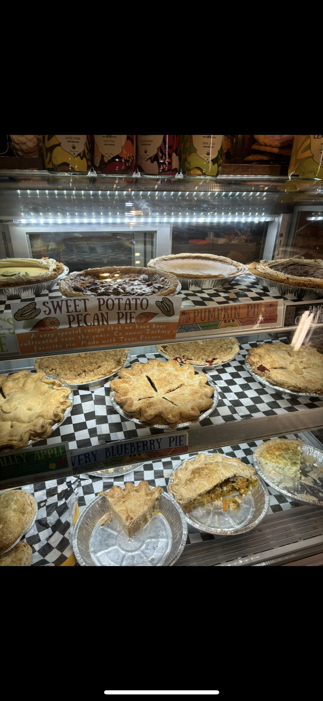
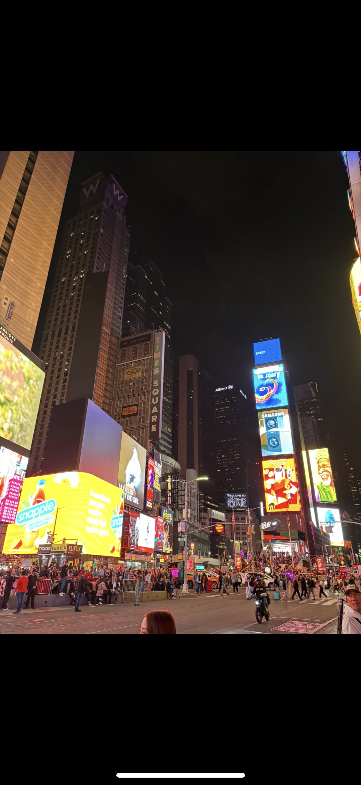
The last trip of my gap year was the longest. I stayed in New York
for a month, not knowing what to expect from a city that seems to be
everywhere in movies, TV shows and books. Is it surprising that it
was pretty much what I had imagined? Maybe even better.
Sometimes, walking the streets of Manhattan would feel as if I was
walking through a movie set. Certain spots felt almost familiar: the
Empire State Building, Grand Central Station, the Brooklyn Bridge
and so many more! Staying for so long was also an amazing way to get
accustomed to the lifestyle of the city and get plenty of pratice
speaking English.
What Stayed With Me
-
Unexpectedly, I did not eat that many burgers… But I ended up
eating a lot of delicious Asian food, especially in Chinatown.
-
One of the best features of this city is its multiculturalism:
so many different cultures coexisting in one place.
-
I was in New York round Halloween time. This allowed me to see
the amazing decorations all around the city, but also to take a
short trip to Sleepy Hollow and attend the annual parade. Yes,
the Headless Horseman was there!
Reflection
Overall, this gap year was not only an amazing experience, but it also
allowed me to prove to myself that I was able to step out of my
comfort zone to finally fulfil lifelong dreams; some of them even
sooner than I expected.
I developed a sense of autonomy that gave me more confidence, but more
importantly, this year fed my curiosity and strengthened my desire to
never stop learning and challenging myself. I cherish every memory it
left me with and am already looking forward to my next adventures.